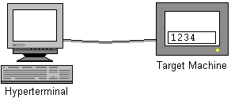
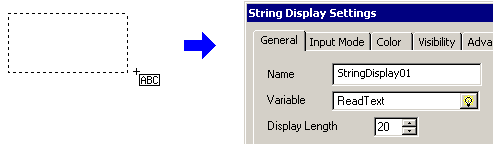

|
|
|
|
|
|
|
|
In the following example, the target machine receives and displays messages from a hyperterminal.

Add the script driver and rename it HyperTerminal.
See Section 18.8.3, Setting up the Script Driver.
Connect the hyperterminal to the defined COM port.
See Section 18.8.4, Cable Connections.
Create a String variable, rename it to ReadText, and in its NumOfBytes property define the number of characters it can store.
This variable will be used to store and display text from the hyperterminal.
Create a String Display object, assign the newly created STRING variable, and define the Display Length to match the variable's NumOfBytes.

Create the action script with the following properties:
Trigger Type: Periodic
Frequency: 2.5
Scheduling: Normal
Write the script.
// 1. Create script variables
// For reading messages from hyperterminal
int result;
byte readArray[]= new byte[20];
// 2. Read data from serial port
result = HyperTerminal.read(0, 20, readArray);
if (result <= 0) // Check for error
ReadText.write("ERROR"); // Write to variable
else
{
// Convert byte array to String
String temp = new String( readArray );
ReadText.write(temp);
}
Create local script variables for working with the message received from the hyperterminal.
Check the serial port for any data received from the hyperterminal. If the read result is less than 0, then an error has occurred and write "ERROR" to the string variable.
If the read result is greater than 0, then data has been received. Convert the byte array into a String and write the result to the string variable.